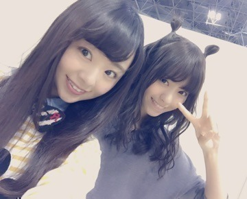
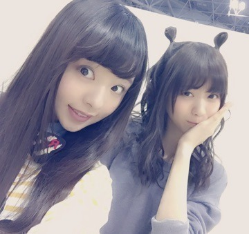
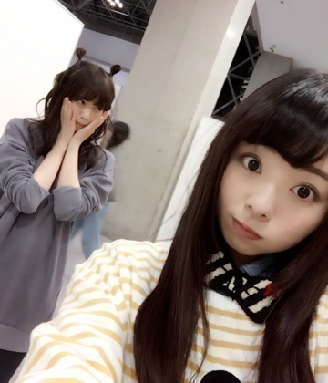
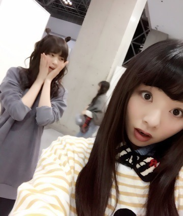
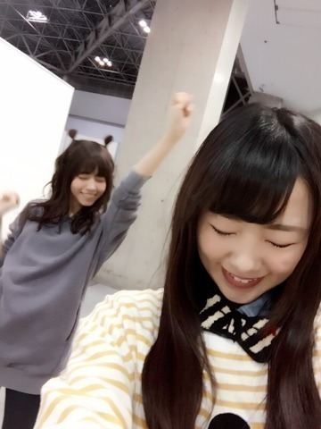
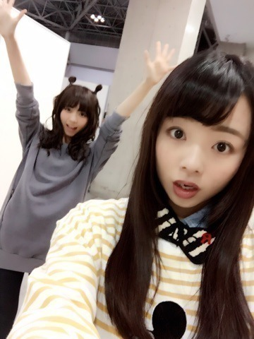

こんにちわ～（＾ω＾）❤️
なあだよ？まにだよ？まにです！
なあまに。

あ～。なあのヘアスタイル気になるで❤️わら

今はカフェに居るよぉ。
4人掛けのテーブルに1人だから少し寂しい。
でもこうやって 1人でぼぉ～っとする時間が大好きなの。
でねでね最近観た映画の話をしようと思って（＾ω＾）
あのね，『ANNIE/アニー』めえっっちゃ良かったです。
好きな映画って人によると思いますけど、音楽が好きな私には『ANNIE/アニー』は大好きでした！
映画館で足でリズムとりながら観るってこと初めてだったし、
何故かどっか自分の幼い頃と重ね合わさる所があって、始まってすぐ涙が... ラスト号泣。
笑いもあって、本当に楽しくて感動する、夢を与える様な素晴らしい映画でした。
まだ観てないよ～！って方も時間があれば是非♩
ちなみに、ベイマックスも観たい。。。
NARUTOもTSUTAYAで借りることになっちゃいそう（ ｉ _ ｉ ）
映画っていいですね❤️
えいっ。

合わせた訳やないけど，なんとなく表情が2人して同じ感じに...。

ほら（＾ω＾）

わー。

あっ。blog書いてる間にコーヒーが冷めちゃったね。わら
まあええか❤️
皆 今日もお疲れ様ね。またね。